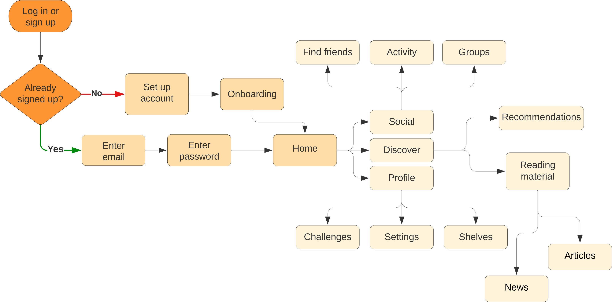

The Brief
Redesign the Goodreads app interface to better highlight its social features. Simplify it so that it is no longer buggy or overwhelming.
Notes
This case study was published in Bootcamp in 2022 by Fabricio Teixeira, the founder of UX Collective.
Research
Identifying the Problems
Identifying the problems with the original interface required tearing it down to its bare bones to remove any impractical or ineffectual components.
User Survey
I surveyed 65 people to understand why they do or do not use the app. I wanted to gauge how much they actually knew about the original interface.
User Journey Map
I did away with the overwhelming navigation in the original apps by minimising the number of decisions a user may have to make at any given point in time. By minimising decision time, we are reducing the frustration a user may have while using the app.
User Persona

Development
Visual Design
Colour Scheme
I still keep the fundamental tones of eggshell and grey (albeit, lighter), but with a modern twist which the Windsor Tan brings. In conjunction with Sepia and Seal Brown, it provides a monochromatic progression.
Overall, the colour scheme is now warmer, more cohesive, and more welcoming.
Microinteractions
These animations add a more dynamic feel to perhaps a buggy UI and makes up for a speed issue in the app.
Font
I designed this app for an iOS system , so it employs SF Pro Display for titles and New York for long form content to promote readability.